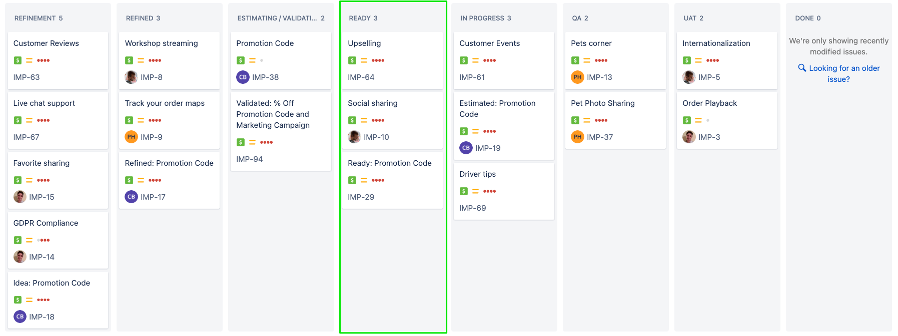
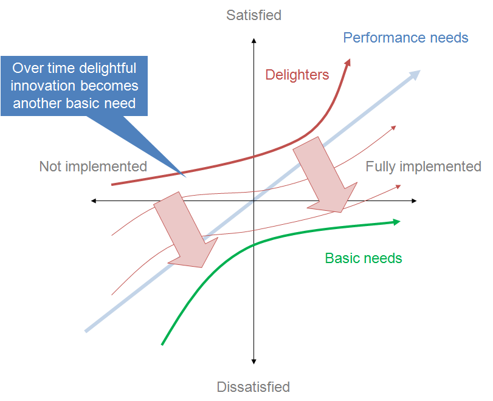

Prioritizing page
Learn how to prioritize initiatives.
Overview
After estimating the value of an initiative and its costs, it’s time to decide where the initiative belongs in the product backlog. In this training, the product backlog is the initiatives with the Ready status.

Typically, prioritization is outside of a Program Manager’s responsibility. So, we will not go into much detail about prioritization. However, we will review:
Some well-known prioritization frameworks
How to manage the Ready column when prioritization decisions are made
For the exercise, you will prioritize the different initiatives with your training team and establish the official product backlog!
The following is the Google Slides presentation for this material:
Prioritization Frameworks
Prioritization frameworks help guide people toward making a decision on what are the most valuable initiatives to pursue. Ultimately, there is no framework that can model all the complex factors that go into these decisions and rank initiatives accordingly. And because different frameworks omit important factors, sticking too closely to any one framework will likely result in uninspired and non-optimal product decisions.
Fortunately, there are a wide variety of different prioritization frameworks to learn from. We will share the basics of each framework and our thoughts on their strengths and weaknesses. Finally, we will share some extra considerations not found in the frameworks below.
MoSCoW
The MoSCoW method is a quick filtering mechanism that groups initiative ideas into 4 categories:
Must have
Should have
Could have
Will not have
The first letter of those categories forms the acronym MoSCoW. Teams can simply tag initiatives with these labels.
Strengths
The MoSCoW method is very simple and fast. MoSCoW is most useful when starting on a new product. It can quickly identify where to focus (the Musts). It can be a nice first-pass as you set out to build an MVP.
Weaknesses
MoSCoW doesn’t provide much guidance on how to prioritize within each of its categories. It’s also susceptible to having too many Musts.
Kano Model

The Kano Model attempts to model how customers think about products. It groups features into 3 main categories:
Basic Needs / Must-be quality - The feature must be there to compete in the market.
Example: If a car doesn’t have a steering wheel.Performance Needs / One-dimensional quality - Customer satisfaction improves as this feature improves.
Example: A car’s mile-per-gallon rating.Delighters / Attractive Quality - Innovative ideas that awe the customer.
Example: Self-driving cars.
Strengths
Kano is a strategic prioritization framework. To gain market adoption, it advises products must have all basic needs satisfied, and either:
Strongly compete on performance needs, or
Provide a novel benefit
Kano can help product teams identify their core customer problem and how they will differentiate themselves.
Weaknesses
Kano doesn’t factor in the costs of feature development, nor does it attempt to gauge the financial benefits of a feature.
RICE Scoring
RICE Scoring asks product teams to evaluate an initiative across three criteria:
Reach - How many people will the initiative affect?
Example: 100 thousand people will see a promotion.Impact - How much will this initiative impact a user’s choices?
Example: It will have a high impact.Effort - How much will it cost to deliver this initiative?
Example: It will take 6 person-months between product design, development, QA, and DevOps.
Finally, it asks how much confidence the product team has in the reach, impact, and effort scores. For example, they might be 80% confident.
Once all the numbers are entered, you multiply them to get a RICE score:
Score = Reach * Impact * Confidence / Effort
Strengths
RICE scoring is a quick way to determine the relative cost/benefit of initiatives.
Weaknesses
RICE uses Reach and Impact to gauge the value an initiative might bring. While React is typically provided in absolute terms, Impact is provided as a relative value like:
3 - massive impact
2 - high impact
1 - medium impact
0.5 - low impact
0.25 - minimal impact
Using relative value means we can’t quantify the value being created. For example, it might be more valuable to have a high impact on a few high-value customers than a low impact on a many lower-value customers.
Shortest Weighted Job First
Shortest Weighted Job First (SWJF) is similar to RICE, but includes a stronger recognition that, all things equal, projects that can add value earlier should outweigh projects that provide more value but take longer to acquire. The formula for SWJF is:
SCORE = ( User-Business Value +
Time Criticality +
Risk Reduction and Opportunity Enablement ) /
Job Duration
The criteria area:
User-business value - How much value will the customer or business receive?
Time criticality - How does time affect the value? For example, will customers leave if this feature is not delivered soon?
Risk reduction and opportunity enablement - Does this feature reduce risk or enable new opportunities?
Job Duration - How long will the project take, end to end?
Strengths
SWJF adds time criticality and non “value” benefits to its calculation. Furthermore, it uses Job Duration instead of Job Cost to add more weight to initiatives that can be delivered quickly.
Weaknesses
Like RICE, this uses relative weights so the quantity of value can not be determined. Also, it lacks a confidence field.
Projected Value Upside
Projected Value Upside is an investor tool for calculating the increased value of an investment in some specified timeframe. Typically, it’s calculated as follows:
VALUE = ( Additional Revenue - Costs ) / Time
Product teams can determine the timeframe they wish to compare.
Strengths
Projected Value calculates in absolute terms. It’s trying to calculate how much real value, in dollars or other currency, this feature expects to return. As Additional Revenue can be itself calculated in a wide variety of ways, this framework can be rather flexible. Teams can model Additional Revenue however they want.
The other benefit is that this method can be used to analyze past predictions. While it can be hard to analyze any single initiative’s additional value, taking a batch of initiatives and seeing how much better a product has done is possible.
Weaknesses
There are several challenges with using projected value.
First, different initiatives return on investment in different timescales. Some initiatives might provide a large value once. Others might provide less value but over a long time.
Second, the value of items like tech debt are challenging to factor into value.
Finally, it doesn’t naturally factor in the cost of delaying an initiative. For example, if a feature is a basic-need, adding it might not increase revenue, it will only prevent the product from losing revenue.
A Summary of Prioritization Considerations
The following is a list of items to consider when prioritizing pulled from the frameworks listed above:
How much value do you expect the initiative to create?
Which customers and how many customers will the initiative reach?
How will customers respond to your initiative? Will it delight them, attract them, or is it a necessary feature?
Does the initiative align with your strategic goals?
How much value do you expect the initiative to save?
How time-sensitive is the initiative? Are there costs to delaying it?
What does the initiative de-risk?
Does the initiative accelerate other initiatives?
How much does the initiative cost?
What is the total delivery cost?
What timeframe, from start to finish, can the delivery be completed?
Finally, consider the confidence of all your answers. Adjust for more or less certainty.
Prioritizing the Ready Column
Making a decision on prioritization is typically outside the program manager’s responsibility. However, if you are making the decision, by now, you hopefully have an initiative that:
Is validated to show a strong likelihood of returning value.
Is estimated to understand the cost of the work.
Has a plan that can be developed incrementally in a way to avoid risk.
Now you can decide what to do with the initiative.
🎬 IF the feature has enough value and the cost is worth it, THEN:
- Sort the issue in the
Readycolumn. The initiative should be compared to other initiatives by whatever prioritization framework you use. Put the highest value initiatives at the top. Once this is done, you will schedule your initiative in the next section.
🎬 IF the feature isn’t worth it, THEN:
- Cancel the initiative. Put the reasons why it was canceled. Feel no shame.
🎬 IF you can’t decide, THEN:
- Leave in
EstimatingorValidatingand prioritize the initiative in that column accordingly.
Exercise
In this exercise, the group will l prioritize the initiatives.
Step 1: Review each initiative
Review each initiative and discuss prioritization considerations.
Step 2: Sort the initiatives
Each team member should provide their sorted list. Combine the team’s sorted list into the final prioritized list.